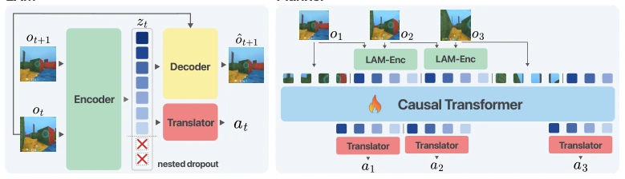
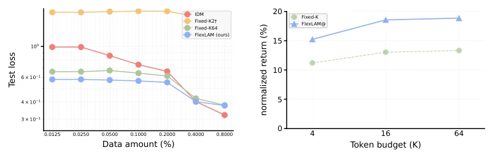
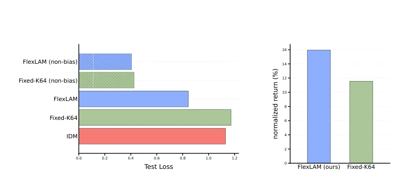
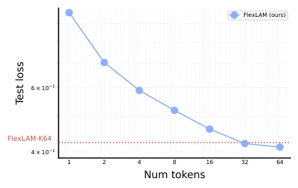
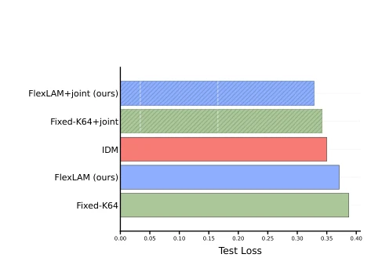
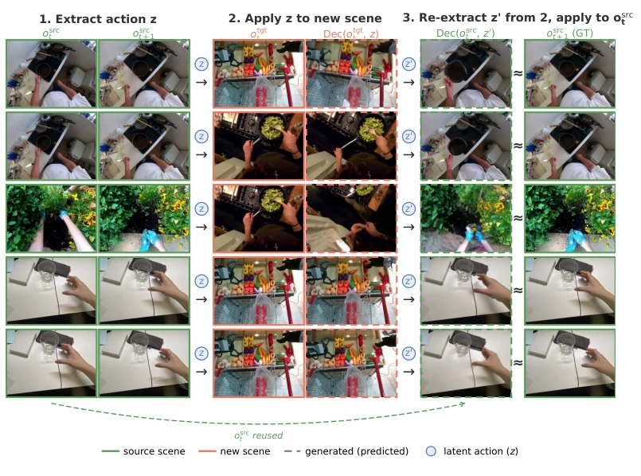
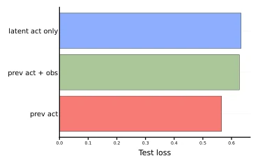
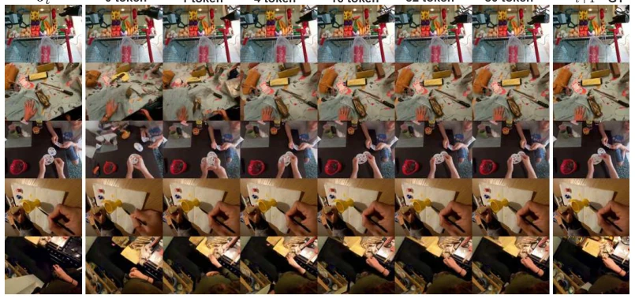

This paper performs a "plastic surgery" on the bottleneck layer of Latent Action Models (LAMs). The authors keenly point out that a fixed capacity bottleneck is a false proposition: too tight loses information, too loose introduces noise. FlexLAM does not introduce a new architecture, but uses nested Dropout to train prefixes, making each prefix effective. This move is quite clever, allowing dynamic adjustment of token budget during inference without retraining. But to be honest, this looks more like an upgrade of training techniques rather than a fundamental breakthrough in representation learning. It solves the "generalist" problem, but does not solve the "essence" problem. It is very practical for resource-constrained robot deployment, after all saving the cost of training multiple fixed models. However, whether it truly learns more robust representations, or just makes the translator more prone to overfitting the prefixes, remains to be seen. It performs excellently on DMLab, but the Ego4D comparison is against external models, with slightly weaker control of variables.
研究动机Motivation
现有 LAMs (Edwards et al., 2019; Rybkin et al., 2019) 假设所有状态转移都适合固定长度的潜在动作代码。但这忽略了视频过渡的复杂性差异：有些只是相机稳定，有些涉及遮挡或视角变化。Zhang et al. (2026) 指出 LAM 代码可能编码了无关帧差异。当标签稀缺时，固定瓶颈面临两难：紧编码丢失对齐线索，松编码引入难以过滤的噪声。这导致在少样本或窄分布标签下，对齐性能不稳定。现有工作多关注下游策略，忽略了表征接口本身的容量匹配问题。这种“一刀切”的瓶颈设计在真实世界中显得僵化，限制了模型在复杂环境下的泛化能力。
Existing LAMs (Edwards et al., 2019; Rybkin et al., 2019) assume that all state transitions are suitable for fixed-length latent action codes. But this ignores the complexity differences in video transitions: some are just camera stabilization, some involve occlusion or viewpoint changes. Zhang et al. (2026) point out that LAM codes may encode irrelevant frame differences. When labels are scarce, the fixed bottleneck faces a dilemma: tight encoding loses alignment clues, loose encoding introduces noise that is difficult to filter. This leads to unstable alignment performance under few-shot or narrow distribution labels. Existing work mostly focuses on downstream policies, ignoring the capacity matching problem of the representation interface itself. This "one-size-fits-all" bottleneck design appears rigid in the real world, limiting the model's generalization ability in complex environments.

Figure 2: FlexLAM overview. (a) During LAM pretraining, FlexLAM samples a retained prefix length k and replaces suffix slots with a shared null latent before decoder training. (b) The same prefix representation is used for latent-to-action alignment with a small labeled set. (c) A fixed latent-token evaluator predicts latent-action tokens for downstream evaluation using the same translator interface.
FlexLAM modifies the bottleneck training method of standard LAMs. The core is "Retained-Prefix Training". For a latent action vector z_t of length K, the prefix length k is randomly sampled during training, and the suffix is padded with learnable empty latent values z_∅. The decoder is trained based only on the current observation and retained prefix, which makes early tokens carry more general information, and later tokens supplement details. In the alignment phase, the translator also receives prefixes of different lengths, reducing dependence on suffix noise. During inference, the model can dynamically select k based on the budget, without retraining. This utilizes the idea of Nested Dropout, but applied to actions rather than image tokens. In this way, the model learns to maintain the effectiveness of latent actions at different granularities, thereby achieving architecture-agnostic flexibility.

Figure 3: Scarce-label alignment and matched-budget return. Left: translator test loss versus labeled dataset size. Right: downstream normalized return under 0.025% labels at matched token budgets. Fixed-k models are trained separately; FlexLAM@k evaluates one FlexLAM model at prefix length k. FlexLAM outperforms Fixed-K at every evaluated budget.
Tested downstream returns on DMLab, compared against separately trained Fixed-K models. Results show FlexLAM outperforms Fixed-K under all token budgets, proving its representation quality is higher. On Ego4D, FlexLAM outperforms the villa-X-LAM reference model on PSNR, SSIM, and LPIPS. Cross-entity experiments indicate latent actions can transfer to different robot morphologies. Ablation experiments show joint fine-tuning can further improve performance, and prefix length k has a trade-off relationship with latency/performance. Especially in label-scarce scenarios, FlexLAM's stability is significantly better than the fixed capacity baseline, verifying the contribution of prefix training to alignment robustness.

Figure 4: Action alignment from a narrow single-task source. The translator is trained using labels from a single low-return source task (Lasertag One Opponent Large; 0.04% of the full dataset), then evaluated on the normalized multi-task suite excluding that source task. Left panel shows translator test loss in this narrow-source setting, compared with a control using the same label budget sampled uniformly across tasks. Right panel shows normalized downstream task return (% of DreamerV3 expert). Full per-task results are reported in Appendix C.1.

Figure 7: Prefix-length scaling within one FlexLAM model. Translator test loss as a function of retained prefix length k. This plot varies only the retained prefix used by the same trained FlexLAM model. Lower loss indicates better latent-to-action alignment.

Figure 8: Joint LAM-translator fine-tuning. Using 0.5% action-labeled data, we compare translator validation loss for IDM (no bottleneck), a fixed-capacity LAM, and FlexLAM, with and without joint alignment. In the frozen setting, IDM can be stronger because it directly observes the input frames. Joint alignment allows action loss to update the LAM bottleneck, improving bottlenecked LAMs and reversing the IDM-vs-LAM ordering. Under the same joint recipe, FlexLAM improves more than the fixed-capacity LAM.
其他图片Other Figures

Figure 6: Latent actions transfer across embodiments. Each row runs a round trip across two scenes by encoding the source transition, z = Enc(ot, ot+1) (left); decoding it onto the target frame, ˆot+1 = Dec(otgt t , z) (middle); re-encoding, z′ = Enc(otgt t , ˆot+1); and decoding back to the source, Dec(osrc t , z′) ≈ot+1 (right). Green frames denote the source scene, red the new scene, and dashed frames are model-generated.

Figure 10: Translator conditioning ablation. Translator test loss for three input choices, namely z only, z + previous action, and z + previous action + observation. Conditioning on at−1 improves prediction in egocentric settings. Directly feeding ot can make the translator more sensitive to appearance variation under limited supervision.

Figure 12: Additional real-world prefix sweeps. Reconstructions from the same FlexLAM model while varying retained prefix length k across Ego4D and robot-video examples. Larger prefixes recover additional visual detail, while shorter prefixes preserve coarse transition structure.